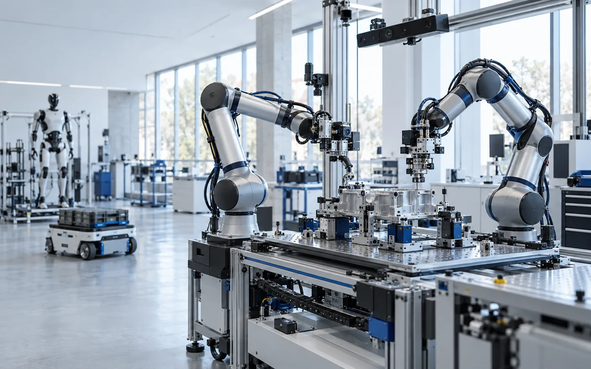

Robotik Manipülasyon
Robot kollarıyla kavrama, taşıma, servis ve fiziksel görev otomasyonu.
Physical AI teknolojileriyle robot kolları, insansı robotlar ve otonom sistemleri gerçek dünya görevlerini anlayabilen ve gerçekleştirebilen akıllı sistemlere dönüştürüyoruz.

Semantic Robotics; klasik robot kontrolünü kamera ve sensör tabanlı algılama, yapay zekâ, imitation learning ve yeni nesil Physical AI modelleriyle birleştirerek değişken gerçek dünya koşullarında çalışabilecek robotik sistemler geliştirir.
Robot kollarıyla kavrama, taşıma, servis ve fiziksel görev otomasyonu.
İnsansı robotların servis, lojistik, etkinlik ve saha görevlerinde kullanılması.
Algılama, karar verme ve robot kontrol katmanlarının uçtan uca entegrasyonu.
İlk ticari odağımız kahve hazırlama ve yiyecek-içecek servis görevlerini gerçekleştirebilen çift robot kollu otonom istasyonlar geliştirmek.
Ancak bu ürün nihai hedefimiz değil. Bu sistem, geliştirdiğimiz Physical AI altyapısının gerçek dünyadaki ilk uygulamalarından biri olacak.
Uzun vadede hedefimiz; robot kolları, mobil robotlar ve insansı robotlar üzerinde çalışabilecek Physical AI çözümleri geliştirerek servis, üretim, lojistik, denetim ve insan için riskli çalışma ortamlarında uçtan uca robotik sistemler sunmak.
Tekrarlanabilir servis görevlerinde güvenli ve tutarlı operasyon.
Değişken iş akışlarına uyum sağlayan esnek robotik sistemler.
Algılama destekli taşıma, ayırma ve iç lojistik görevleri.
İnsanlarla doğal ve güvenli biçimde etkileşen sistemler.
İnsan için riskli koşullarda uzaktan veya otonom görev icrası.
İnsan ortamlarına uyumlu, genel amaçlı robotik yetenekler.
Yapay zekâdaki hızlı gelişim artık fiziksel dünyaya taşınıyor. Robotik sistemler sabit ve önceden programlanmış makinelerden, çevresini algılayabilen ve yeni görevleri öğrenebilen sistemlere dönüşüyor.
Türkiye’de Physical AI ve yeni nesil robotik alanındaki girişim ekosistemi henüz erken aşamada. Semantic Robotics olarak bu dönüşümün yalnızca takipçisi değil, geliştiricilerinden biri olmayı hedefliyoruz.
Algılamadan harekete uzanan katmanları tek bir çalışan sistemde bir araya getiriyoruz.
Ekibimiz elektrik-elektronik, kontrol, otomasyon ve bilgisayar mühendisliği geçmişine sahip üç mühendisten oluşuyor. Uzun süredir otonom sistemler, robotik ve yapay zekâ projeleri geliştiriyoruz.
Robotik, otonom sistemler ve yapay zekâ alanlarında teknik geçmiş. Ulusal ve uluslararası robotik yarışmalarında kazanımlar. Robot yazılımı, navigasyon, algılama ve sistem entegrasyonu deneyimi.
Lise yıllarından itibaren roket ve mühendislik yarışmalarında aktif. TEKNOFEST ve farklı teknik projelerde uzun süreli mühendislik tecrübesi.
Yazılım ve yapay zekâ altyapısında güçlü teknik geçmiş. TÜBİTAK İHA yarışmaları ve farklı mühendislik projelerinde deneyim.
“Farklı disiplinlerdeki tecrübemizi aynı hedefte birleştiriyoruz: Türkiye'den global ölçekte rekabet edebilecek bir robotik teknoloji şirketi çıkarmak.”
İş birlikleri, pilot uygulamalar ve teknoloji ortaklıkları için bizimle iletişime geçin.